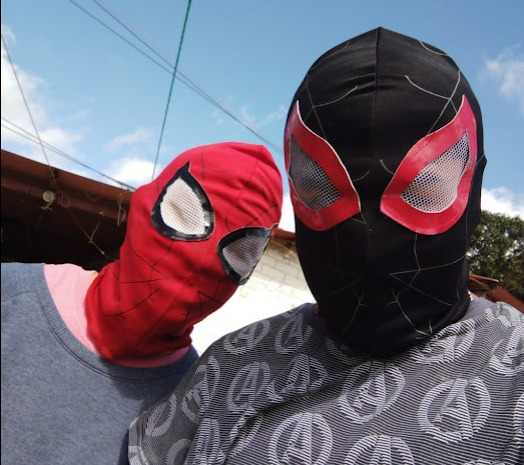
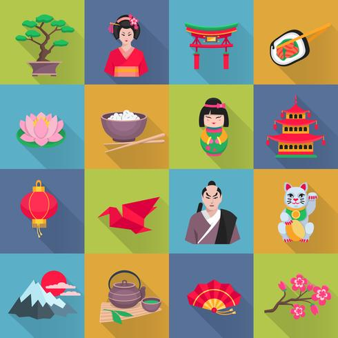

| Pasar el tiempo con Mi amigo | Musica | Video Juegos | Cultura Japonesa |
|---|---|---|---|
|
Sonara raro, pero me gusta pasar tiempo con mi mejor amigo, no importa que hagamos, me divertire, desde hacer tarea juntos, hasta celebrar que pasamos a sexto con una pizza y videojuegos, es mi mejor amigo asi que me divertire siempre con el, entre raros nos entendemos  |
La musica es mi pasion, no es que sepa tocar instrumento, pero amo escuchar musica, comence con ese gusto desde que era pequeño, gracias a mis padres tal ves, no me acuerdo, solo se que hasta el dia de hoy, lo sigo amando, mi cancion favorita es Eyeless de Slipknot y mi albun Favorito es "Porfiado" - Cuarteto de Nos 
|
Pero porsupuesto que me gustan los video-juegos, a quien no ? supongo que a cualquiera, aunque soy mas fan de juegos tipo Call of Duty o battlefield, tambien me gustan juegos de exploracion como Genshin Impact o Far Cry 3, Ultimamente eh estado Jugando LoL(League of Leyends) y es totalmente diferente a como lo pintan, es un buen juego. |
La cultura Japonesa es hermosa por si sola, desde hace tiempo me ah llamado la atencion varias cosas, la mayoria es por la comida, pero cosas como sus costumbres, sus tradiciones, su gente, su historia, su comunidades, soy muy fan de su arte, al igual que lo que preducen como el anime, aunque soy mas fan del Manga  |